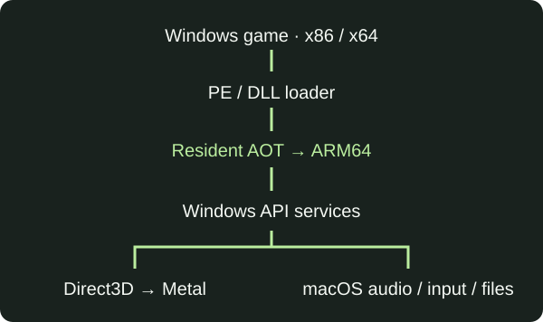

Runtime architecture
From a Windows executable to an Apple Silicon frame

Loading the game
The Launcher selects the executable, working directory, virtual drives and CPU core count. AppleJuice’s fully native macOS PE/DLL loader maps image sections and resolves imports independently of Wine and Windows.
Translating instructions
The kernel decodes x86 and x64 instructions into regions of ARM64 code. Resident workers execute these regions. The Launcher and compatibility layer link the kernel’s static SDK.
Reusing translations
SMAP data lets the kernel reuse compatible translations. The precompile-pe command prepares eligible regions without starting the game, and background workers can translate upcoming regions.
Native Windows API compatibility
AppleJuice implements its own Windows API layer on macOS, independently of Wine and Windows. It connects the game to graphics, input, audio and files. Supported Direct3D 9–12 operations map to Metal. Direct3D 12 coverage is partial.
Graphics and sound
MetalFX supports spatial upscaling and, for games using XeSS, temporal upscaling. The Launcher uses VideoToolbox on supported systems to generate intermediate display frames while the game updates at its own rate. HRTF mixes multichannel audio into binaural stereo for headphones.
Technical guide · Kernel SDK interface
執行環境架構
從 Windows 執行檔到 Apple Silicon 上的遊戲畫面
載入遊戲
Launcher 選定執行檔、工作目錄、虛擬磁碟及 CPU 核心數。AppleJuice 的 PE／DLL 載入器完全以 macOS 原生程式實作，負責映射映像區段、解析匯入函式，整個載入流程獨立於 Wine 與 Windows。
轉譯 CPU 指令
核心將 x86 與 x64 指令解碼並轉譯為 ARM64 程式碼區段，再由常駐工作執行緒執行。Launcher 與相容層透過靜態 SDK 連結核心。
重用轉譯結果
核心可透過 SMAP 資料重用與目前映像相容的轉譯結果。precompile-pe 指令可在啟動遊戲前預先轉譯符合條件的區段，背景工作執行緒也可提前準備後續區段。
原生 Windows API 相容層
AppleJuice 自行實作 macOS 原生的 Windows API 相容層，不依賴 Wine 或 Windows。這一層將遊戲呼叫接到繪圖、輸入、音訊及檔案服務。支援的 Direct3D 9–12 操作會對應至 Metal，其中 Direct3D 12 為部分支援。
畫面與聲音輸出
MetalFX 提供空間升頻，也能為使用 XeSS 的遊戲提供時間性升頻。Launcher 在支援的系統上透過 VideoToolbox 產生中間畫面，遊戲邏輯維持原本的更新頻率。HRTF 則將多聲道音訊混合為適合耳機播放的雙耳立體聲。
技術手冊 · 核心 SDK 介面
ランタイムの構成
Windows 実行ファイルから Apple Silicon のゲーム画面まで
ゲームの読み込み
Launcher で実行ファイル、作業ディレクトリ、仮想ドライブ、CPU コア数を選びます。AppleJuice 独自の macOS ネイティブ PE／DLL ローダーが、Wine や Windows に依存せずセクションのマッピングとインポートの解決を行います。
CPU 命令の変換
カーネルは x86 と x64 の命令をデコードして ARM64 コードに変換し、常駐ワーカーが実行します。Launcher と互換レイヤーは静的 SDK 経由でカーネルに接続します。
変換結果の再利用
SMAP に保存した変換結果は互換性のあるイメージで再利用できます。precompile-pe はゲームを起動せずに対象領域を事前変換します。バックグラウンドワーカーも後続の領域を準備できます。
ネイティブ Windows API 互換レイヤー
AppleJuice が macOS 上に独自実装した Windows API 互換レイヤーは、Wine や Windows に依存せず、描画・入力・音声・ファイルのサービスを提供します。対応する Direct3D 9–12 の処理を Metal に変換します。Direct3D 12 は一部対応です。
映像と音声の出力
MetalFX は空間アップスケーリングに加え、XeSS 対応ゲームでは時間的アップスケーリングも提供します。対応環境では Launcher が VideoToolbox で中間フレームを生成し、ゲームの更新頻度は変わりません。HRTF は多チャンネル音声をヘッドホン向けのバイノーラルステレオに変換します。
技術ガイド · カーネル SDK インターフェース
런타임 아키텍처
Windows 실행 파일에서 Apple Silicon의 게임 화면까지
게임 불러오기
Launcher에서 실행 파일, 작업 디렉터리, 가상 드라이브와 CPU 코어 수를 선택합니다. AppleJuice의 macOS 네이티브 PE/DLL 로더가 Wine이나 Windows에 의존하지 않고 이미지 섹션을 매핑하고 가져올 함수를 연결합니다.
CPU 명령어 변환
커널이 x86 및 x64 명령어를 해석해 ARM64 코드 영역으로 변환하면 상주 작업 스레드가 이를 실행합니다. Launcher와 호환 계층은 정적 SDK로 커널에 연결됩니다.
변환 결과 재사용
커널은 SMAP 데이터를 사용해 호환되는 변환 결과를 재사용합니다. precompile-pe 명령으로 게임을 시작하기 전에 대상 영역을 변환할 수 있으며 백그라운드 작업 스레드도 다음 영역을 미리 준비합니다.
네이티브 Windows API 호환 계층
AppleJuice가 macOS에서 자체 구현한 Windows API 호환 계층은 Wine이나 Windows에 의존하지 않고 그래픽, 입력, 오디오 및 파일 서비스를 제공합니다. 지원하는 Direct3D 9–12 작업을 Metal로 변환하며 Direct3D 12는 일부 기능을 지원합니다.
화면과 소리 출력
MetalFX는 공간 업스케일링을 지원하며 XeSS를 사용하는 게임에는 시간적 업스케일링도 제공합니다. 지원되는 시스템에서 Launcher는 VideoToolbox로 중간 프레임을 생성하고 게임 로직은 원래 속도로 업데이트됩니다. HRTF는 다채널 오디오를 헤드폰용 바이노럴 스테레오로 믹싱합니다.
기술 안내서 · 커널 SDK 인터페이스